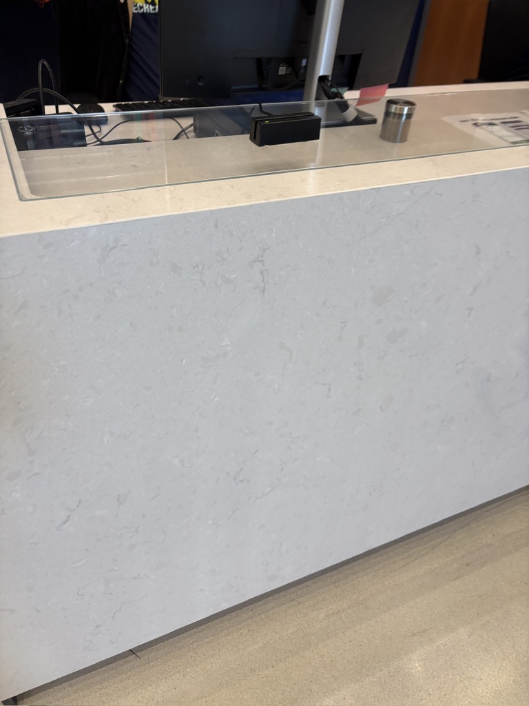
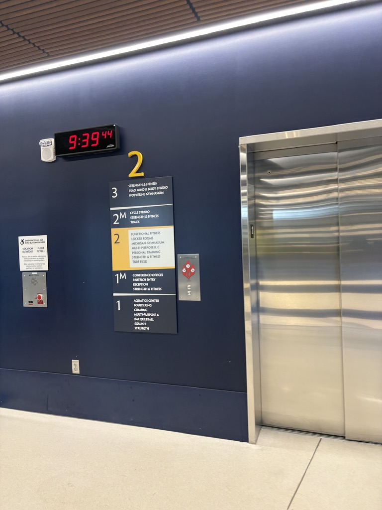
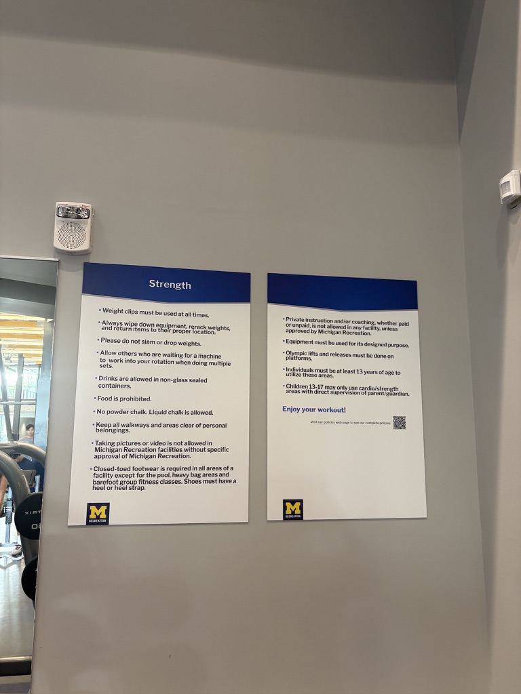
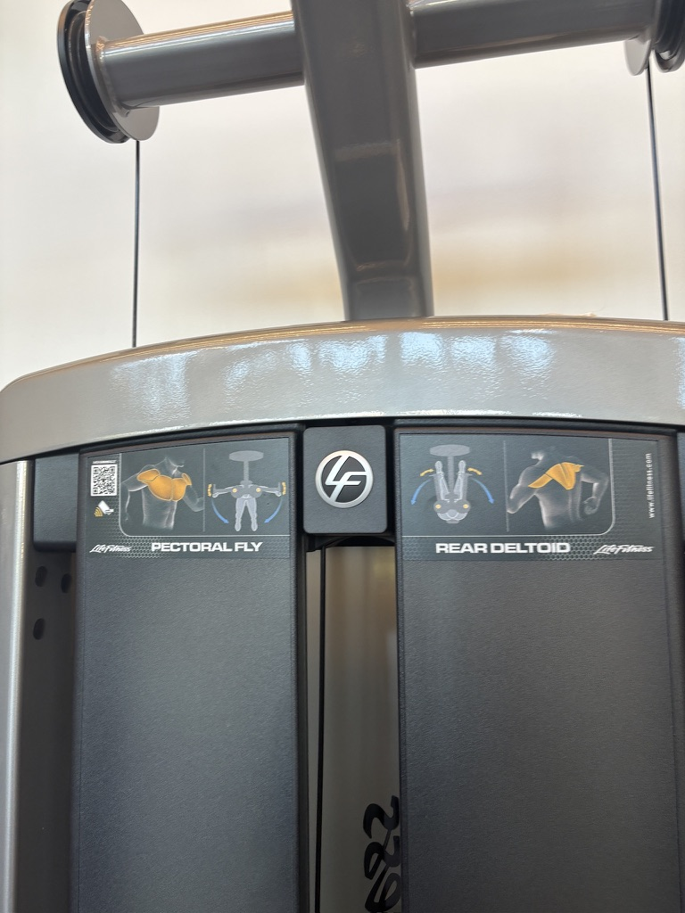

Interaction Field Study
· Week 4
On September 21, I began an interaction field study where I went to experience a an existing system. Per the assignment, I "[Paid] attention to how people receive information, make decisions, take action, and move through the experience."
Hadley Recreation Center
I chose the Hadley Recreation Center for my interaction field study Below are photos and raw notes I took before collecting evidence and creating an experience map.




Raw notes
There is a clear flow of movement as you enter the building. While there is no sign that says "check in here" the space invites you to the desk. As you exit, you pass the same desk you checked in at.
If your card does not swipe, a staff member can enter your UMID instead for valid entry.
A first-time visitor would not have too much trouble navigating and utilizing the space if they go to the gym often. Someone that does not go to the gym very often may have trouble navigating the space and finding machines and spaces right for them.
When machines are out of order, a piece of paper is taped to them. There is no clear instruction on where to find a similar machine or when the machine is receiving maintenance.